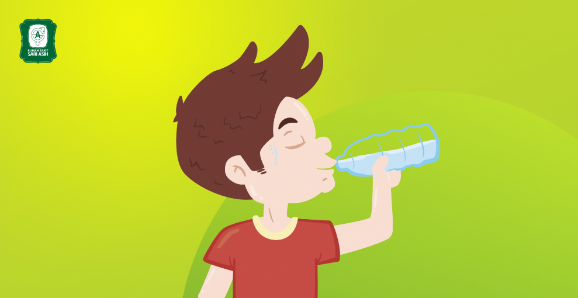

Tujuan Pembelajaran
- Siswa dapat menyebutkan dan mempresentasikan faktor-faktor yang mempengaruhi kualitas air dengan benar.
- siswa dapat menganalisis pengaruh kualitas air terhadap kehidupan manusia dengan benar.
- siswa dapat menjelaskan cara memelihara ketersediaan air bersih dengan benar.
- siswa dapat menjelaskan cara-cara memelihara ketersediaan air bersih dengan baik.
Ayo Membaca
Air Untuk Kebutuhan Sehari - Hari
Bagaimana rasa air laut? Ya, air laut terasa asin. Jika kamu berenang di pantai dan terpercik air laut, kamu akan mengetahui bahwa air laut terasa asin. Sebagian besar (97%) air yang menutupi planet bumi ini berupa air laut. Air laut tidak bagus untuk diminum. Air laut juga tidak dapat digunakan dalam kebanyakan industri dan keperluan rumah tangga. Untunglah 3% air di dunia berupa air segar, yaitu air yang tidak asin dan dapat digunakan untuk minum, memasak, dan mencuci. Persyaratan air bersih meliputi tiga komponen, yaitu persyaratan secara fisik, secara kimia, dan kandungan mikroba yang terdapat di dalamnya.
1. Persyaratan secara fisik
- Tidak Keruh
- Tidak berwarna apapun
- Tidak berasa apapun
- Tidak berbau apapun
- Suhu antara 10° - 25°C (sejuk)
- tidak meninggalkan endapan
2. Syarat kimiawi
- Tidak mengandung bahan kimiawi yang mengandung racun
- Tidak mengandung zat-zat kimiawi yang berlebihan
- Cukup yodium
- pH (derajat keasaman) air antara 6,5 - 9,2
3. Syarat mikrobiologi
- Tidak mengandung kuman-kuman penyakit seperti disentri, tipus, dan kolera
Masyarakat memerlukan air dalam jumlah yang sangat besar. Air yang akan digunakan diambil dari sungai-sungai terdekat atau sumbersumber air lain seperti sumur. Air dari sungai dan sumber-sumber air dialirkan dan disimpan dalam tangki penampung yang sangat besar. Tangki penampungan berisi air ditambahkan sejumlah kecil gas chlorine untuk membunuh kuman berbahaya. Selanjutnya, air dipompa melalui pipa bawah tanah menuju ke rumah-rumah penduduk. Air inilah yang digunakan untuk keperluan sehari-hari masyarakat.
Sumber air lainnya didapat dari penggalian tanah. Lubang penggalian ini dinamakan sumur. Masyarakat membuat sumur sebagai sumber air untuk keperluan sehari-hari. Dahulu, orang menggunakan timba untuk mengambil air dari sumur. Namun, sekarang kita dapat menggunakan pompa air bertenaga listrik. Dengan pompa itu air dialirkan ke atas melalui pipa menuju ke bak penampung air, kamar mandi, dapur, dan tempat-tempat lain di rumah.